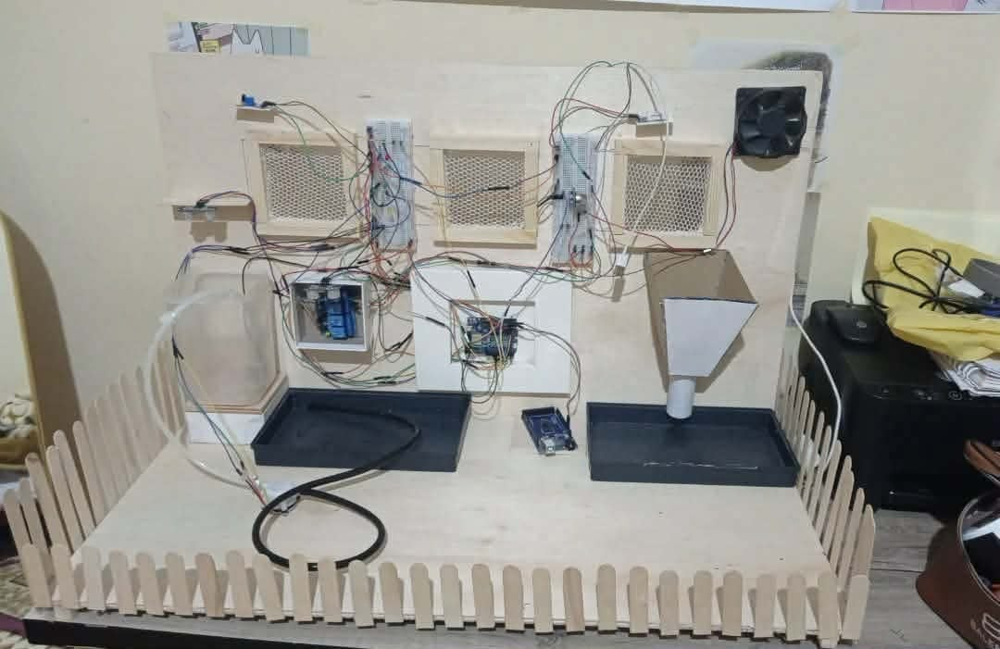
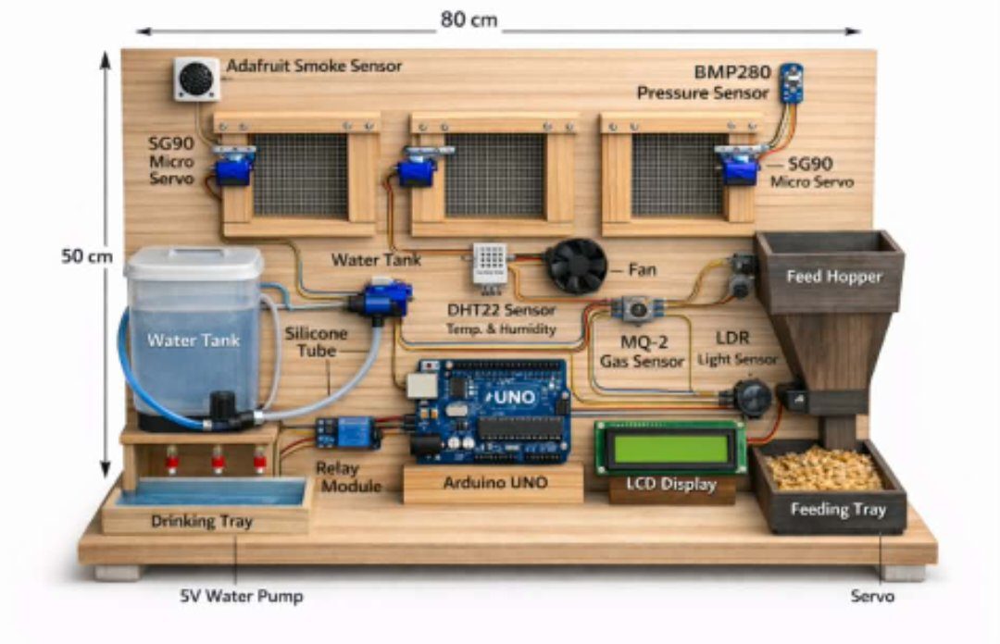

Designed and built a physical IoT-based smart poultry farm prototype using Arduino (UNO R4 WiFi),
combining hardware engineering (wiring, sensors, wooden enclosure fabrication)
with embedded software and cloud connectivity to automate and monitor a hen house environment in real time.
Key Features:
- Real-time environmental monitoring: temperature and humidity sensing (DHT22) for both indoor and outdoor conditions
- Automated water management: ultrasonic sensors continuously measure water trough and tank levels, automatically triggering a water pump via relay when levels drop below threshold
- Air quality & safety monitoring: gas sensor (MQ2) for smoke/gas detection and a flame sensor for early fire detection, HC-SR04 sensor and LED alerts (red/yellow/green status indicators)
- Automated ventilation: relay-controlled fan activates based on temperature/air-quality readings to regulate airflow
- Cloud connectivity via MQTT: device publishes live sensor data over a secure MQTT connection (TLS/SSL) to a cloud broker (EMQX), enabling remote monitoring and future dashboard/app integration
- Servo-based mechanism: for automated feeding or door/vent control
- Hands-on prototyping: custom wooden housing, breadboard circuits, and physical sensor placement demonstrating full-stack embedded systems development — from hardware assembly to firmware and cloud communication

Real Picture of the Smart Poultry House Prototype

Rough design
Tech Stack: C++ (Arduino), WiFiS3 / WiFiSSLClient, ArduinoMqttClient, ArduinoJson, DHT Sensor Library, Servo Library, MQTT (EMQX Cloud, TLS), Ultrasonic & Gas/Flame/temperature Sensors, Relay Modules